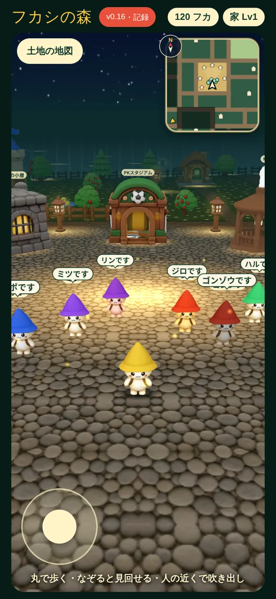
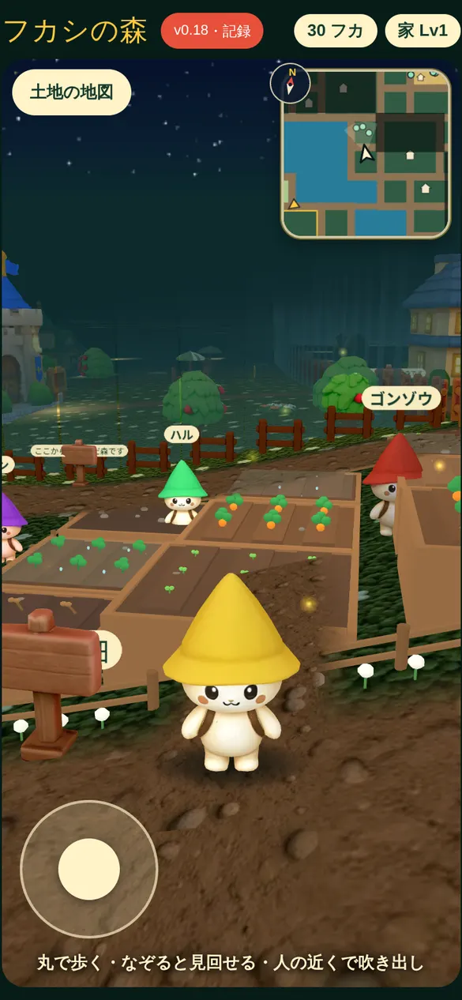
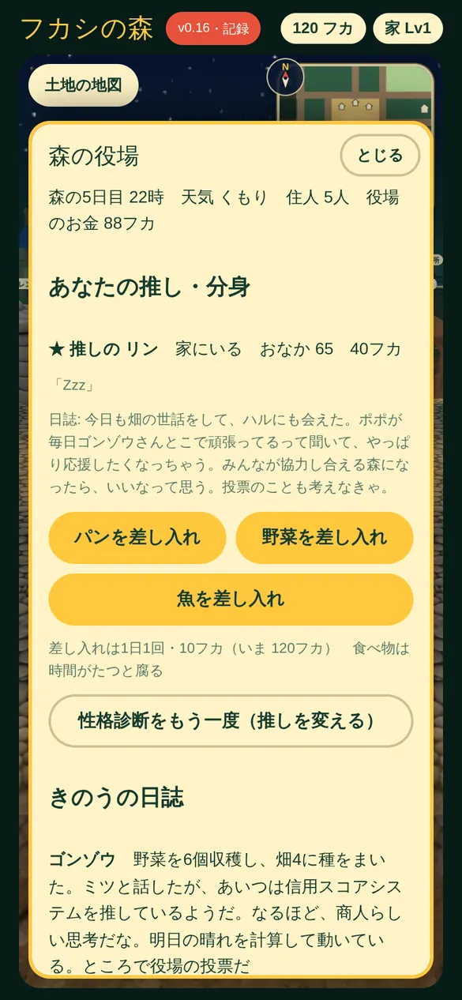
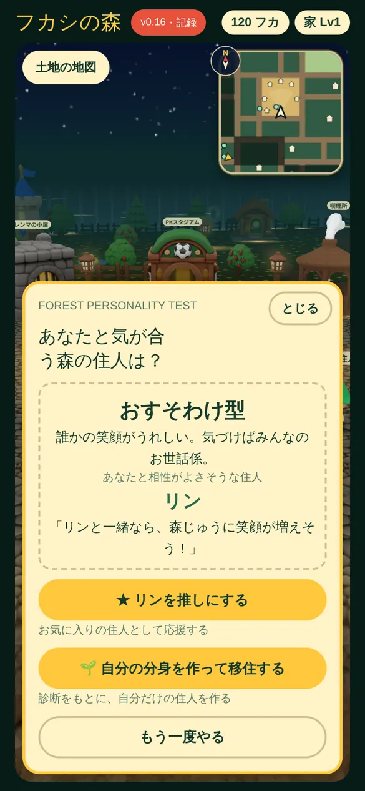
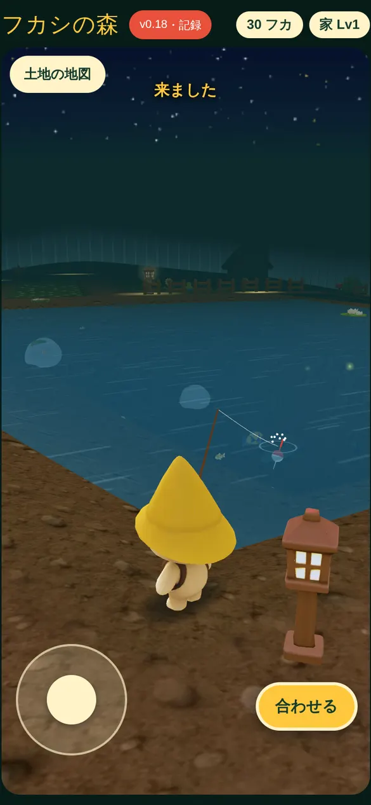
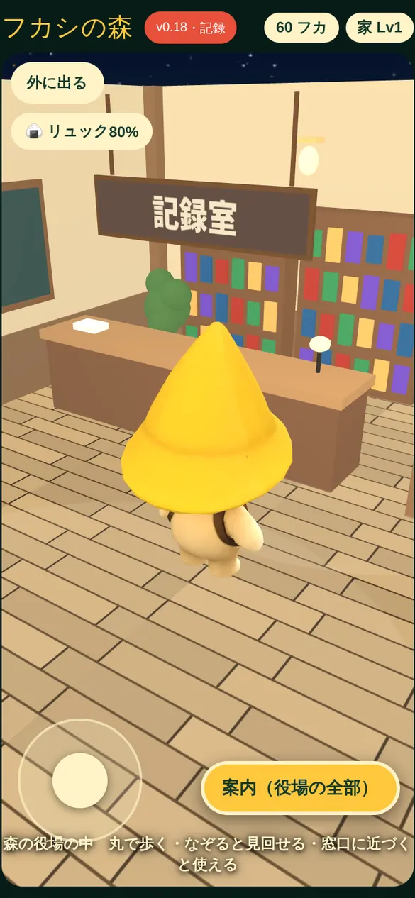
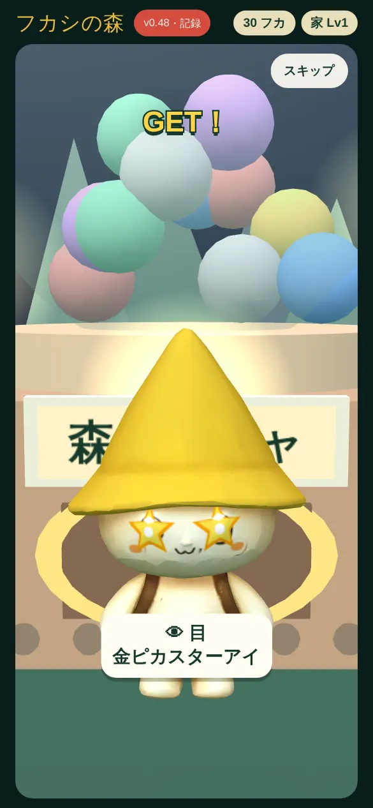
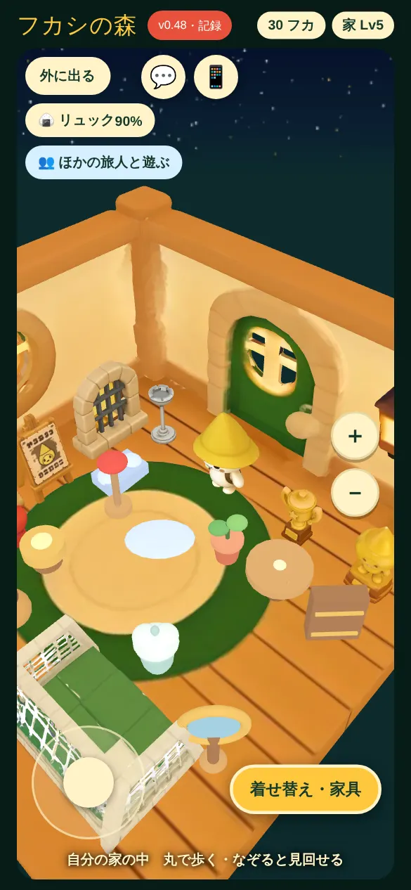
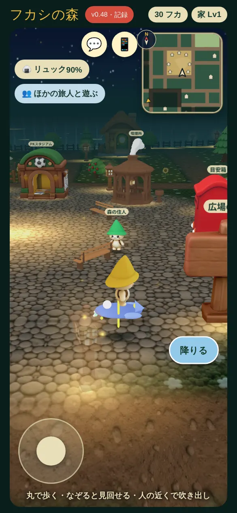
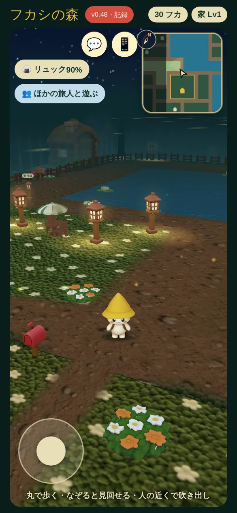

<title>フカシの森</title>
<meta name="description" content="AIで本当に暮らしている住人7人の、夜の森。無料・ブラウザで開くだけ">
<link rel="preconnect" href="https://fonts.googleapis.com">
<link rel="preconnect" href="https://fonts.gstatic.com" crossorigin>
<link rel="stylesheet" href="https://fonts.googleapis.com/css2?family=Zen+Old+Mincho:wght@500;700;900&family=Zen+Kaku+Gothic+New:wght@400;500;700&family=IBM+Plex+Mono:wght@400;500&display=swap">
<style>
/* レイアウト: 夜の森をのぞく観察記録。左に言葉・右にゲームの実画面（スマホの枠）、章ごとに時刻と日誌の体裁で進む。1つの見た目（夜）に決め打ち */
:root{
  --night:#081B18; --shade:#102A25; --shade2:#163630;
  --moon:#E9D9A4; --lantern:#D8A85B; --moss:#8BB59A; --stone:#D8C7B2; --mist:#7E968C; --line:#24443C;
  --display:"Zen Old Mincho","Hiragino Mincho ProN","Yu Mincho",serif;
  --body:"Zen Kaku Gothic New","Hiragino Sans","Yu Gothic",system-ui,sans-serif;
  --mono:"IBM Plex Mono",ui-monospace,"SFMono-Regular",Menlo,monospace;
  --w:1120px;
  color-scheme:dark;
}
*{box-sizing:border-box}
html{scroll-behavior:smooth}
body{background:var(--night);color:var(--stone);font-family:var(--body);font-size:16px;line-height:1.85;-webkit-font-smoothing:antialiased;overflow-x:hidden}
a{color:inherit}
img{max-width:100%;display:block}
.wrap{max-width:var(--w);margin-inline:auto;padding-inline:clamp(16px,4vw,40px)}
h1,h2,h3{font-family:var(--display);color:var(--moon);font-weight:700;text-wrap:balance;margin:0;letter-spacing:.02em}
p{margin:0}
.eyebrow{font-family:var(--mono);font-size:12px;letter-spacing:.18em;color:var(--moss);text-transform:uppercase;display:flex;gap:12px;align-items:center}
.eyebrow b{color:var(--lantern);font-weight:500}
.lead{font-size:clamp(15px,1.6vw,17px);color:var(--stone);max-width:36em}
.quiet{color:var(--mist);font-size:14px}
:focus-visible{outline:2px solid var(--lantern);outline-offset:3px;border-radius:6px}

/* 上の帯 */
.top{position:sticky;top:env(safe-area-inset-top,0px);z-index:20;background:color-mix(in srgb,var(--night) 86%,transparent);backdrop-filter:blur(8px);-webkit-backdrop-filter:blur(8px);border-bottom:1px solid var(--line)}
.top .wrap{display:flex;align-items:center;justify-content:space-between;gap:16px;padding-block:12px}
.logo{font-family:var(--display);font-weight:900;color:var(--moon);font-size:20px;text-decoration:none;letter-spacing:.06em;display:flex;align-items:center;gap:10px}
.logo svg{width:22px;height:22px}
.top nav{display:flex;gap:20px;font-size:14px}
.top nav a{text-decoration:none;color:var(--stone)}
.top nav a:hover{color:var(--moon)}
@media (max-width:760px){.top nav .hide-s{display:none}}

/* ボタン */
.btn{display:inline-flex;align-items:center;gap:10px;font-weight:700;text-decoration:none;border-radius:999px;padding:14px 26px;font-size:16px;transition:transform .2s,box-shadow .3s,background .2s}
.btn.main{background:var(--moon);color:var(--night);box-shadow:0 0 0 0 rgba(216,168,91,.0),0 10px 30px -8px rgba(216,168,91,.55);animation:lamp 5s ease-in-out infinite}
.btn.main:hover{transform:translateY(-2px);background:#F3E6B8}
.btn.ghost{border:1px solid var(--line);color:var(--moon)}
.btn.ghost:hover{border-color:var(--moss);background:var(--shade)}
@keyframes lamp{0%,100%{box-shadow:0 10px 30px -8px rgba(216,168,91,.45)}50%{box-shadow:0 10px 38px -6px rgba(216,168,91,.75)}}
.btns{display:flex;flex-wrap:wrap;gap:12px;align-items:center}

/* スマホの枠に入れたゲーム画面 */
.phone{position:relative;border-radius:34px;padding:9px;background:linear-gradient(160deg,#21403A,#0C201C);box-shadow:0 30px 80px -20px rgba(0,0,0,.7),inset 0 0 0 1px #2C4D45;max-width:100%}
.phone img{border-radius:26px;width:100%;height:auto;aspect-ratio:585/1266;object-fit:cover;background:var(--shade)}
.cap{font-family:var(--mono);font-size:12px;color:var(--mist);margin-top:12px;letter-spacing:.04em}

/* HERO */
.hero{position:relative;padding-block:clamp(40px,7vw,96px) clamp(48px,7vw,96px);overflow:hidden}
.hero .wrap{display:grid;grid-template-columns:minmax(0,1.15fr) minmax(0,.85fr);gap:clamp(28px,6vw,80px);align-items:center}
.hero h1{font-size:clamp(30px,5.2vw,62px);line-height:1.22;font-weight:900}
.hero h1 span{display:block}
.p{display:inline-block}
.hero h1 em{font-style:normal;color:var(--lantern)}
.hero .copy{display:grid;gap:26px;min-width:0}
.hero .facts{display:flex;flex-wrap:wrap;gap:8px 18px;font-size:13px;color:var(--mist);font-family:var(--mono)}
.hero .facts span::before{content:"◆ ";color:var(--moss)}
.hero .shot{justify-self:center;width:min(340px,100%);transform:translateY(var(--py,0px));transition:transform .2s linear}
.glow{position:absolute;inset:auto -10% -40% auto;width:60vw;height:60vw;max-width:780px;max-height:780px;background:radial-gradient(circle,rgba(216,168,91,.16),transparent 62%);pointer-events:none}
.fly{position:absolute;width:4px;height:4px;border-radius:50%;background:var(--moon);box-shadow:0 0 10px 3px rgba(233,217,164,.55);opacity:.0;animation:fly 9s ease-in-out infinite;pointer-events:none}
@keyframes fly{0%{opacity:0;transform:translate(0,0)}20%{opacity:.9}60%{opacity:.5}100%{opacity:0;transform:translate(40px,-70px)}}
@media (max-width:820px){.hero .wrap{grid-template-columns:1fr}.hero .shot{width:min(300px,82%)}}

/* いまの森（ライブ） */
.now{border-block:1px solid var(--line);background:var(--shade)}
.now .wrap{display:flex;gap:18px 36px;align-items:center;flex-wrap:wrap;padding-block:18px}
.now .clock{font-family:var(--mono);font-size:13px;color:var(--moss);display:flex;gap:10px;align-items:center;white-space:nowrap}
.dot{width:8px;height:8px;border-radius:50%;background:var(--moss);box-shadow:0 0 0 0 rgba(139,181,154,.6);animation:pulse 2.4s infinite}
@keyframes pulse{0%{box-shadow:0 0 0 0 rgba(139,181,154,.55)}80%,100%{box-shadow:0 0 0 10px rgba(139,181,154,0)}}
.ticker{flex:1;min-width:0;display:flex;gap:28px;overflow-x:auto;scrollbar-width:none;font-size:14px}
.ticker::-webkit-scrollbar{display:none}
.ticker p{white-space:nowrap}
.ticker b{color:var(--moon);font-weight:700;margin-right:6px}

/* 章 */
section.ch{padding-block:clamp(64px,10vw,128px)}
.ch-head{display:grid;gap:18px;margin-bottom:clamp(32px,5vw,56px);max-width:760px}
.ch-head h2{font-size:clamp(28px,4.4vw,48px);line-height:1.3}

/* 住人 */
.res-list{display:grid;grid-auto-flow:column;grid-auto-columns:minmax(232px,1fr);gap:16px;overflow-x:auto;scroll-snap-type:x mandatory;padding-bottom:14px;scrollbar-color:var(--line) transparent}
.res{scroll-snap-align:start;background:var(--shade);border:1px solid var(--line);border-radius:18px;padding:22px 20px 20px;display:grid;gap:12px;align-content:start;min-width:0;transition:border-color .25s,transform .25s}
.res:hover{border-color:var(--moss);transform:translateY(-3px)}
.res:hover .av svg{transform:rotate(-6deg)}
.av{display:flex;align-items:end;gap:14px}
.av svg{width:64px;height:64px;transition:transform .35s cubic-bezier(.3,1.6,.5,1);transform-origin:50% 90%}
.res h3{font-size:24px}
.res .role{font-size:12px;font-family:var(--mono);color:var(--moss);letter-spacing:.08em}
.res .type{display:inline-block;font-size:12px;color:var(--night);background:var(--lantern);border-radius:999px;padding:2px 10px;font-weight:700;justify-self:start}
.res .say{font-family:var(--display);color:var(--moon);font-size:15px;line-height:1.7;border-top:1px dashed var(--line);padding-top:12px}
.res .say small{display:block;font-family:var(--mono);font-size:11px;color:var(--mist);margin-top:4px}
.res .desc{font-size:14px}
.hint{font-family:var(--mono);font-size:12px;color:var(--mist);margin-top:8px}

/* 森の1日 */
.day{display:grid;grid-template-columns:minmax(0,1fr) minmax(0,340px);gap:clamp(32px,6vw,80px);align-items:start}
.tl{list-style:none;margin:0;padding:0;display:grid;position:relative}
.tl::before{content:"";position:absolute;left:66px;top:10px;bottom:10px;width:1px;background:var(--line)}
.tl li{display:grid;grid-template-columns:56px 20px minmax(0,1fr);gap:0 14px;padding-block:14px;align-items:start}
.tl time{font-family:var(--mono);font-size:15px;color:var(--moss);text-align:right;padding-top:2px}
.tl .pin{width:11px;height:11px;border-radius:50%;background:var(--night);border:2px solid var(--moss);margin:7px 0 0 5px;position:relative;z-index:1}
.tl li.sleep .pin{border-color:var(--mist)}
.tl li.diary .pin{background:var(--lantern);border-color:var(--lantern);box-shadow:0 0 14px rgba(216,168,91,.7)}
.tl li.diary time{color:var(--lantern)}
.tl h3{font-size:19px;margin-bottom:2px}
.tl p{font-size:14.5px}
@media (max-width:820px){.day{grid-template-columns:1fr}.day .phone-wrap{width:min(300px,82%);justify-self:center}}

/* 推しと分身 */
.pick{display:grid;grid-template-columns:repeat(2,minmax(0,1fr));gap:20px}
.card{background:var(--shade);border:1px solid var(--line);border-radius:22px;padding:clamp(22px,3vw,34px);display:grid;grid-template-columns:minmax(0,1fr) 150px;gap:22px;align-items:start}
.card h3{font-size:clamp(22px,2.6vw,28px);margin-bottom:10px}
.card .mark{font-size:13px;font-family:var(--mono);color:var(--lantern);letter-spacing:.1em;margin-bottom:8px}
.card ul{margin:14px 0 0;padding:0;list-style:none;display:grid;gap:8px;font-size:14.5px}
.card li{display:grid;grid-template-columns:16px 1fr;gap:8px}
.card li::before{content:"";width:6px;height:6px;border-radius:50%;background:var(--moss);margin-top:11px}
.card .phone{border-radius:22px;padding:5px}
.card .phone img{border-radius:18px}
.quiz-q{margin-top:28px;display:grid;grid-template-columns:minmax(0,1fr) auto;gap:16px;align-items:center;border:1px dashed var(--line);border-radius:18px;padding:18px 22px}
.quiz-q p{font-family:var(--display);color:var(--moon);font-size:clamp(17px,2vw,20px)}
.quiz-q small{display:block;font-family:var(--body);color:var(--mist);font-size:13px}
@media (max-width:900px){.pick{grid-template-columns:1fr}}
@media (max-width:480px){.card{grid-template-columns:1fr}.card .phone{width:160px}.quiz-q{grid-template-columns:1fr}}

/* 投票 */
.vote{display:grid;grid-template-columns:minmax(0,.9fr) minmax(0,1.1fr);gap:clamp(28px,5vw,64px);align-items:start}
.flow{list-style:none;padding:0;margin:0;display:grid;gap:12px;counter-reset:f}
.flow li{counter-increment:f;display:grid;grid-template-columns:40px 1fr;gap:14px;align-items:start;background:var(--shade);border:1px solid var(--line);border-radius:16px;padding:16px 18px}
.flow li::before{content:counter(f);width:32px;height:32px;border-radius:50%;border:1px solid var(--lantern);color:var(--lantern);font-family:var(--mono);display:grid;place-items:center;font-size:14px}
.flow b{color:var(--moon);display:block;font-family:var(--display);font-size:17px}
.flow span{font-size:14px}
.board{background:#1B2E22;background-image:radial-gradient(rgba(255,255,255,.035) 1px,transparent 1px);background-size:6px 6px;border:1px solid #2F4A36;border-radius:20px;padding:clamp(20px,3vw,30px);box-shadow:inset 0 0 0 6px #142219}
.board h3{font-size:20px;display:flex;justify-content:space-between;gap:12px;flex-wrap:wrap;align-items:baseline}
.board h3 small{font-family:var(--mono);font-size:12px;color:var(--mist);font-weight:400}
.bars{list-style:none;padding:0;margin:20px 0 0;display:grid;gap:14px}
.bars li{display:grid;grid-template-columns:minmax(0,1fr) 48px;gap:6px 12px;align-items:center}
.bars .t{font-size:14.5px;color:var(--stone)}
.bars .n{font-family:var(--mono);text-align:right;color:var(--moon);font-variant-numeric:tabular-nums;grid-row:span 2}
.bars .b{height:8px;border-radius:4px;background:var(--line);overflow:hidden}
.bars .b i{display:block;height:100%;background:var(--moss);border-radius:4px}
.bars li.top .b i{background:var(--lantern)}
.bars li.top .t{color:var(--moon);font-weight:700}
.board .note{margin-top:16px;font-size:12.5px;color:var(--mist)}
@media (max-width:860px){.vote{grid-template-columns:1fr}}

/* 食べ物 */
.food{display:grid;gap:18px}
.shelf{border-top:1px solid var(--line)}
.row{display:grid;grid-template-columns:110px minmax(0,1fr) minmax(0,1.2fr);gap:10px 24px;align-items:center;padding-block:18px;border-bottom:1px solid var(--line)}
.row .nm{font-family:var(--display);color:var(--moon);font-size:22px;white-space:nowrap;display:flex;align-items:center;gap:10px}
.row .nm svg{width:26px;height:26px;flex:none}
.scale{position:relative;height:30px}
.scale .track{position:absolute;inset:13px 0 auto 0;height:4px;border-radius:2px;background:var(--line)}
.scale .fill{position:absolute;left:0;top:11px;height:8px;border-radius:4px;background:linear-gradient(90deg,var(--moss),var(--lantern))}
.scale .lab{position:absolute;top:-6px;font-family:var(--mono);font-size:12px;color:var(--moon);transform:translateX(-100%);white-space:nowrap;padding-right:2px}
.row .how{font-size:14px}
.axis{display:grid;grid-template-columns:110px minmax(0,1fr) minmax(0,1.2fr);gap:24px;font-family:var(--mono);font-size:11px;color:var(--mist)}
.axis .ticks{display:flex;justify-content:space-between}
.rules{display:grid;grid-template-columns:repeat(3,minmax(0,1fr));gap:16px;margin-top:28px}
.rules div{border-left:2px solid var(--moss);padding:4px 0 4px 16px;font-size:14.5px}
.rules b{display:block;color:var(--moon);font-family:var(--display);font-size:17px;margin-bottom:4px}
@media (max-width:760px){.row,.axis{grid-template-columns:96px minmax(0,1fr);gap:10px 16px}.row .how{grid-column:1/-1}.axis span:last-child{display:none}.rules{grid-template-columns:1fr}}

/* 日誌 */
.diaries{display:grid;grid-template-columns:repeat(2,minmax(0,1fr));gap:20px}
.page{background:#EDE3C8;color:#2D2A20;border-radius:6px 16px 16px 6px;padding:26px 26px 22px 34px;position:relative;box-shadow:0 18px 40px -18px rgba(0,0,0,.7);background-image:repeating-linear-gradient(transparent 0 31px,rgba(80,70,40,.14) 31px 32px);line-height:32px}
.page::before{content:"";position:absolute;left:16px;top:18px;bottom:18px;width:1px;background:rgba(180,80,60,.35)}
.page .meta{font-family:var(--mono);font-size:12px;color:#6F6550;display:flex;justify-content:space-between;gap:10px;line-height:1.6;margin-bottom:6px}
.page .who{font-family:var(--display);font-weight:700;font-size:18px;color:#2A3B2E}
.page p.txt{font-family:var(--display);font-size:15.5px}
@media (max-width:820px){.diaries{grid-template-columns:1fr}}

/* よくある質問 */
.faq{display:grid;gap:10px;max-width:820px}
.faq details{background:var(--shade);border:1px solid var(--line);border-radius:14px;padding:4px 20px}
.faq summary{cursor:pointer;list-style:none;display:flex;justify-content:space-between;gap:16px;align-items:center;padding-block:14px;color:var(--moon);font-weight:700}
.faq summary::-webkit-details-marker{display:none}
.faq summary::after{content:"+";font-family:var(--mono);color:var(--lantern);font-size:20px;transition:transform .25s}
.faq details[open] summary::after{transform:rotate(45deg)}
.faq details p{padding-bottom:16px;font-size:15px}

/* 最後 */
.end{position:relative;overflow:hidden;text-align:center;padding-block:clamp(80px,12vw,150px);background:radial-gradient(ellipse at 50% 120%,rgba(216,168,91,.18),transparent 60%),var(--night);border-top:1px solid var(--line)}
.end h2{font-size:clamp(30px,5vw,56px);line-height:1.3}
.end .wrap{display:grid;gap:26px;justify-items:center}
.end .btns{justify-content:center}
footer{border-top:1px solid var(--line);padding-block:28px;font-size:13px;color:var(--mist)}
footer .wrap{display:flex;flex-wrap:wrap;gap:12px 28px;justify-content:space-between}
footer a{color:var(--stone)}

@media (prefers-reduced-motion:reduce){*,*::before,*::after{animation:none!important;transition:none!important}html{scroll-behavior:auto}.hero .shot{transform:none}}
</style>

<header class="top">
  <div class="wrap">
    <a class="logo" href="#top" aria-label="フカシの森 トップへ"><svg viewBox="0 0 24 24" aria-hidden="true"><path d="M12 2 4 15h16z" fill="#D8A85B"/><ellipse cx="12" cy="18" rx="5" ry="4" fill="#E9D9A4"/></svg>フカシの森</a>
    <nav aria-label="ページ内">
      <a class="hide-s" href="#residents">住人</a>
      <a class="hide-s" href="#day">森の1日</a>
      <a class="hide-s" href="#oshi">推しと分身</a>
      <a class="hide-s" href="#life">旅人の暮らし</a>
      <a class="hide-s" href="#play">森の遊び</a>
      <a href="#faq">よくある質問</a>
    </nav>
  </div>
</header>

<main id="top">
<section class="hero" aria-labelledby="hero-h">
  <div class="glow" aria-hidden="true"></div>
  <div class="wrap">
    <div class="copy">
      <p class="eyebrow"><b>FUKASHI NO MORI</b> 夜の森の観察記録</p>
      <h1 id="hero-h"><span>誰もいない間も、</span><span><em>森</em>は暮らしている。</span></h1>
      <p class="lead">畑を耕し、魚を釣り、ときには恋をして、事件も起こす。AIの住人7人が、それぞれの考えで暮らす小さな森。日誌を読んで、好きな住人を見つけて、ときにはあなたも森の一員に。</p>
      <div class="btns">
        <a class="btn main" href="https://futurex-jp.github.io/fukashi-mori/" target="_blank" rel="noopener">森に入る <span aria-hidden="true">↗</span></a>
        <a class="btn ghost" href="https://mori.futurex-works.jp/" target="_blank" rel="noopener">役場で日誌を読む</a>
      </div>
      <p class="facts"><span>無料</span><span>インストール不要</span><span>スマホのブラウザで開くだけ</span></p>
    </div>
    <figure class="shot" id="heroShot" style="margin:0">
      <div class="phone"></div>
      <figcaption class="cap">実際のゲーム画面　広場に住人が集まっている</figcaption>
    </figure>
  </div>
</section>

<div class="now" aria-label="いまの森">
  <div class="wrap">
    <p class="clock"><span class="dot" aria-hidden="true"></span><span id="nowClock">10月9日 朝の森　2日目 8時・くもり</span></p>
    <div class="ticker" id="ticker">
      <p><b>ゴンゾウ</b>畑を貸す。利は小さくない</p>
      <p><b>ミツ</b>今日も商機を探すぞ！</p>
      <p><b>ハル</b>朝飯前に一仕事だ。</p>
      <p><b>リン</b>朝ごはん食べて、畑の準備しよっか</p>
      <p><b>ポポ</b>ねむい〜。木の実おいしい〜</p>
      <p><b>ジロ</b>朝飯探しの時間だ！</p>
      <p><b>ケイ</b>朝食を取ったら見回りを始めるであります</p>
    </div>
  </div>
</div>

<section class="ch" id="residents" aria-labelledby="res-h">
  <div class="wrap">
    <div class="ch-head">
      <p class="eyebrow"><b>RESIDENTS</b> 住人は7人</p>
      <h2 id="res-h"><span class="p">この森には、</span><span class="p">7人の暮らしがある。</span></h2>
      <p class="lead">7人ともAIで動いていて、性格も記憶も人間関係もそれぞれ別。話しかけると立ち止まってこっちを向き、あなたの名前と話したことを覚えている。</p>
    </div>
    <div class="res-list" tabindex="0" aria-label="住人の一覧（横にスクロール）">
      <article class="res"><div class="av"><svg viewBox="0 0 64 64" aria-hidden="true"><path d="M32 4 12 36h40z" fill="#8E2E2E"/><ellipse cx="32" cy="46" rx="15" ry="13" fill="#F1E6D0"/><circle cx="26" cy="45" r="2" fill="#2A2A2A"/><circle cx="38" cy="45" r="2" fill="#2A2A2A"/></svg><div><p class="role">地主・5段</p><h3>ゴンゾウ</h3></div></div><span class="type">ちゃっかり地主型</span><p class="desc">頭がキレてケチ。畑9区画のうち6区画を持ち、人に貸して小作料を取る</p><p class="say">「畑を貸す。利は小さくない」<small>今朝のひとこと</small></p></article>
      <article class="res"><div class="av"><svg viewBox="0 0 64 64" aria-hidden="true"><path d="M32 4 12 36h40z" fill="#6B4BB0"/><ellipse cx="32" cy="46" rx="15" ry="13" fill="#F4F1FA"/><circle cx="26" cy="45" r="2" fill="#2A2A2A"/><circle cx="38" cy="45" r="2" fill="#2A2A2A"/></svg><div><p class="role">商人・4段</p><h3>ミツ</h3></div></div><span class="type">そろばんパチパチ型</span><p class="desc">損得で動く交渉好き。いつか自分の店を建てるために貯めている</p><p class="say">「今日も商機を探すぞ！」<small>今朝のひとこと</small></p></article>
      <article class="res"><div class="av"><svg viewBox="0 0 64 64" aria-hidden="true"><path d="M32 4 12 36h40z" fill="#3E8A55"/><ellipse cx="32" cy="46" rx="15" ry="13" fill="#F4F1FA"/><circle cx="26" cy="45" r="2" fill="#2A2A2A"/><circle cx="38" cy="45" r="2" fill="#2A2A2A"/></svg><div><p class="role">農家・3段</p><h3>ハル</h3></div></div><span class="type">黙々どっしり型</span><p class="desc">働き者でぶっきらぼう。仲間が困っていると放っておけない</p><p class="say">「朝飯前に一仕事だ。」<small>今朝のひとこと</small></p></article>
      <article class="res"><div class="av"><svg viewBox="0 0 64 64" aria-hidden="true"><path d="M32 4 12 36h40z" fill="#9C6BC0"/><ellipse cx="32" cy="46" rx="15" ry="13" fill="#FBE3EC"/><circle cx="26" cy="45" r="2" fill="#2A2A2A"/><circle cx="38" cy="45" r="2" fill="#2A2A2A"/></svg><div><p class="role">世話焼き・2段</p><h3>リン</h3></div></div><span class="type">おすそわけ型</span><p class="desc">自分の分を削ってでも、食べ物をみんなに分ける</p><p class="say">「朝ごはん食べて、畑の準備しよっか」<small>今朝のひとこと</small></p></article>
      <article class="res"><div class="av"><svg viewBox="0 0 64 64" aria-hidden="true"><path d="M32 4 12 36h40z" fill="#3A62B8"/><ellipse cx="32" cy="46" rx="15" ry="13" fill="#E6E8FB"/><circle cx="26" cy="45" r="2" fill="#2A2A2A"/><circle cx="38" cy="45" r="2" fill="#2A2A2A"/></svg><div><p class="role">のんびり屋・2段</p><h3>ポポ</h3></div></div><span class="type">ごろごろ優勝型</span><p class="desc">食べるのは大好き、働くのは大嫌い。おやつの時間は最優先</p><p class="say">「ねむい〜。木の実おいしい〜」<small>今朝のひとこと</small></p></article>
      <article class="res"><div class="av"><svg viewBox="0 0 64 64" aria-hidden="true"><path d="M32 4 12 36h40z" fill="#D2552E"/><ellipse cx="32" cy="46" rx="15" ry="13" fill="#FBEBC6"/><circle cx="26" cy="45" r="2" fill="#2A2A2A"/><circle cx="38" cy="45" r="2" fill="#2A2A2A"/></svg><div><p class="role">お調子者・1段</p><h3>ジロ</h3></div></div><span class="type">すきま時間満喫型</span><p class="desc">楽してお腹を満たしたい。ときどき、こっそりつまみ食い</p><p class="say">「朝飯探しの時間だ！」<small>今朝のひとこと</small></p></article>
      <article class="res"><div class="av"><svg viewBox="0 0 64 64" aria-hidden="true"><path d="M32 4 12 36h40z" fill="#2B3F66"/><rect x="20" y="31" width="24" height="4" rx="2" fill="#D8A85B"/><ellipse cx="32" cy="46" rx="15" ry="13" fill="#F1E6D0"/><circle cx="26" cy="45" r="2" fill="#2A2A2A"/><circle cx="38" cy="45" r="2" fill="#2A2A2A"/></svg><div><p class="role">警察官・4段</p><h3>ケイ</h3></div></div><span class="type">正義の目立ちたがり型</span><p class="desc">森の平和を守る。事件が起きると聞き込みで犯人を探す</p><p class="say">「朝食を取ったら見回りを始めるであります」<small>今朝のひとこと</small></p></article>
    </div>
    <p class="hint">横にスクロールすると7人全員が見られる　ひとことは本番の森で住人が実際に言ったこと</p>
  </div>
</section>

<section class="ch" id="day" aria-labelledby="day-h" style="background:linear-gradient(var(--night),var(--shade) 30%,var(--shade) 70%,var(--night))">
  <div class="wrap day">
    <div>
      <div class="ch-head">
        <p class="eyebrow"><b>A DAY IN THE FOREST</b> 森の時間</p>
        <h2 id="day-h"><span class="p">森の時間は、</span><span class="p">現実と同じ速さ。</span></h2>
        <p class="lead">森の1日は現実の1日。2時間おきに時間が進み、住人は昼のあいだ4回、自分で考えて動く。あなたが寝ている間に、畑は育ち、誰かが誰かと仲良くなっている。</p>
      </div>
      <ol class="tl">
        <li class="sleep"><time>0:00</time><span class="pin" aria-hidden="true"></span><div><h3>寝ている</h3><p>夜中から朝6時までは、みんな家で眠る。家が壊れた住人は広場で野宿</p></div></li>
        <li><time>6:00</time><span class="pin" aria-hidden="true"></span><div><h3>朝の予定を決める</h3><p>おなかの具合とお財布を見て、今日やることを考える</p></div></li>
        <li><time>10:00</time><span class="pin" aria-hidden="true"></span><div><h3>畑・池・森へ</h3><p>耕す、種をまく、水をやる、魚を釣る、木の実を拾う</p></div></li>
        <li><time>14:00</time><span class="pin" aria-hidden="true"></span><div><h3>売り買いと立ち話</h3><p>行商人と取引し、広場で立ち話。お金の貸し借りや仕事の約束もここで決まる</p></div></li>
        <li><time>18:00</time><span class="pin" aria-hidden="true"></span><div><h3>夕方の用事</h3><p>家の修理、借りたお金の返済、ときには事件の聞き込み</p></div></li>
        <li class="diary"><time>22:00</time><span class="pin" aria-hidden="true"></span><div><h3>日誌を書く</h3><p>その日の出来事を日誌に残す。できごとで性格が少しずつ変わる（根っこは変わらない）。「森に欲しい物」もここで出てくる</p></div></li>
      </ol>
    </div>
    <figure class="phone-wrap" style="margin:0">
      <div class="phone"></div>
      <figcaption class="cap">みんなの畑　坂に段々の9区画、芽の育ち具合で分かる</figcaption>
    </figure>
  </div>
</section>

<section class="ch" id="oshi" aria-labelledby="oshi-h">
  <div class="wrap">
    <div class="ch-head">
      <p class="eyebrow"><b>YOUR CONNECTION</b> 森とのつながり方</p>
      <h2 id="oshi-h"><span class="p">推しを見つける。</span><span class="p">自分も住んでみる。</span></h2>
      <p class="lead">初めて森に入ると、5問の性格診断があなたと気が合う住人を教えてくれる。そこから、遊び方を2つから選べる。</p>
    </div>
    <div class="pick">
      <article class="card">
        <div>
          <p class="mark">★ OSHI</p>
          <h3>推しを見守る</h3>
          <p>いま森にいる住人を「推し」にして応援する。推しは友だちとかぶってもいい</p>
          <ul>
            <li>頭の上に金色の★が付いて、広場ですぐ見つかる</li>
            <li>おなかぺこぺこ、家が壊れた。ピンチの時はお知らせが届く</li>
            <li>1日1回、パン・野菜・魚を差し入れできる</li>
            <li>役場で推しの居場所と、ゆうべの日誌が読める</li>
          </ul>
        </div>
        <div class="phone"></div>
      </article>
      <article class="card">
        <div>
          <p class="mark">🌱 MOVE IN</p>
          <h3>分身を移住させる</h3>
          <p>診断の答えをもとに、あなただけの住人を作って森に引っ越させる</p>
          <ul>
            <li>名前・見た目・森で大切にしたいものを決めるだけ</li>
            <li>性格と口ぐせは、診断の答えからAIが作る</li>
            <li>ほかの住人と同じように、自分で考えて暮らす</li>
            <li>1人1体まで。森は12人で満員になる</li>
          </ul>
        </div>
        <div class="phone"></div>
      </article>
    </div>
    <div class="quiz-q">
      <p>Q1. 森で拾った宝箱。どうする？<small>中身を調べる／みんなで使える物に交換／仲間に見せに行く／とりあえず開ける　あと4問</small></p>
      <a class="btn main" href="https://futurex-jp.github.io/fukashi-mori/" target="_blank" rel="noopener">5問の診断をはじめる</a>
    </div>
  </div>
</section>

<section class="ch" id="life" aria-labelledby="life-h" style="background:var(--shade)">
  <div class="wrap">
    <div class="ch-head">
      <p class="eyebrow"><b>YOUR LIFE</b> 旅人の暮らし</p>
      <h2 id="life-h"><span class="p">あなたも、</span><span class="p">おなかがすく。</span></h2>
      <p class="lead">見ているだけじゃない。旅人のあなたにも、おなかとリュックがある。池で釣って、食べて、推しに差し入れる。役場の中も歩いて回れる。</p>
    </div>
    <div class="pick">
      <article class="card">
        <div>
          <p class="mark">🎣 FISHING</p>
          <h3>アタリに、合わせる</h3>
          <p>ウキを投げると、魚の影が寄ってくる。ちょんちょんとつついて、一気に沈んだ瞬間が勝負</p>
          <ul>
            <li>ウキ・竿・糸はぜんぶ立体。食いつくと水しぶきが上がって、スマホが震える</li>
            <li>早すぎても遅すぎても逃げられる</li>
            <li>釣れた魚はリュックへ。その日のうちに食べるか売るか差し入れる</li>
          </ul>
        </div>
        <div class="phone"></div>
      </article>
      <article class="card">
        <div>
          <p class="mark">🏛 TOWN HALL</p>
          <h3>役場の中を歩く</h3>
          <p>役場は建物の中まで入れる。窓口が部署ごとに分かれていて、近づくとその用事ができる</p>
          <ul>
            <li>部署は7つ。住民課（住民票とID）・選挙管理委員会（投票）・記録室（日誌）</li>
            <li>産業課（畑と売店）・福祉課（食糧庫）・会計課（役場のお金）・交番出張所（事件）</li>
            <li>交番の席には、ときどき警察官のケイが座っている</li>
          </ul>
        </div>
        <div class="phone"></div>
      </article>
    </div>
    <div class="rules" style="margin-top:28px">
      <div><b>おなか</b>現実の時間で減って、10時間で空っぽ。ぺこぺこだと歩くのが少し遅くなる。倒れることはない</div>
      <div><b>リュック</b>20こまで入る。食べ物は住人と同じ日数で傷む（魚1日・パン2日・野菜3日・木の実7日）</div>
      <div><b>森の住民票</b>呼び名だけで作れる。IDとパスワードを決めれば、別のスマホやパソコンからも続きができる</div>
    </div>
  </div>
</section>

<section class="ch" id="play" aria-labelledby="play-h">
  <div class="wrap">
    <div class="ch-head">
      <p class="eyebrow"><b>MORE TO PLAY</b> 森の遊び</p>
      <h2 id="play-h"><span class="p">遊びも、</span><span class="p">ちょっと盛ってある。</span></h2>
      <p class="lead">釣ったり潜ったりして貯めたフカで、ガチャを回す。当たった物で、自分の見た目も、家も、庭も、移動も変わっていく。</p>
    </div>
    <div class="pick">
      <article class="card">
        <div>
          <p class="mark">🎰 GACHA</p>
          <h3>カプセルが、割れる</h3>
          <p>ガチャ屋さんで1回10フカ。カプセルが転がり出て、割れた中から当たりが飛び出す</p>
          <ul>
            <li>機械は5つ。きのコロ変身（服と顔）・帽子・家具・乗り物・みんなのガチャ</li>
            <li>顔パーツは激レア。金ピカスターアイ・銀河オッドアイ・王冠スマイルなど、パッと見でレアと分かる</li>
            <li>★5は体のまわりに光が出る。持っている物がまた出たらフカが少し戻る</li>
          </ul>
        </div>
        <div class="phone"></div>
      </article>
      <article class="card">
        <div>
          <p class="mark">🏠 MY HOUSE</p>
          <h3>家に、家具を置く</h3>
          <p>自分の家は中まで入れる。ガチャで当てた家具は、選ぶだけで部屋の空いている所に並ぶ</p>
          <ul>
            <li>家具は30種類以上。盛りすぎたソファ・小さな星の本棚・夢の自動販売機・キノコ王の玉座など</li>
            <li>家を大きくすると、置ける数が増える（いちばん大きい家で20こ）</li>
            <li>家の大きさは、自分の土地に合わせて建つ</li>
          </ul>
        </div>
        <div class="phone"></div>
      </article>
    </div>
    <div class="pick" style="margin-top:22px">
      <article class="card">
        <div>
          <p class="mark">🚲 RIDE</p>
          <h3>乗り物で、走る</h3>
          <p>乗り物ガチャで当てたら、外で「乗る」を押すだけ。歩きの1.3〜2.2倍の速さで森を走れる</p>
          <ul>
            <li>どんぐりカート・葉っぱボード・ふかふか雲・星くずソリなど12台</li>
            <li>乗っている姿は、同じ森にいるほかの旅人にも見える</li>
            <li>家の中・水の中・公民館では、自動で降りる</li>
          </ul>
        </div>
        <div class="phone"></div>
      </article>
      <article class="card">
        <div>
          <p class="mark">🌼 GARDEN</p>
          <h3>庭を、いじる</h3>
          <p>家のまわりの庭に、花壇・ひまわり・木・パラソル・小さな池・柵・灯りを好きな場所に置ける</p>
          <ul>
            <li>画面をタッチした所に置くだけ。24こまで</li>
            <li>置いた物は、外を歩く時にもそのまま見える</li>
          </ul>
        </div>
        <div class="phone"></div>
      </article>
    </div>
    <div class="rules" style="margin-top:28px">
      <div><b>朝市</b>広場の朝市で、住人の店から食べ物や品物を買える。釣った魚は売れる。値段と在庫は住人の暮らしで変わる</div>
      <div><b>みんなで</b>同じ森に入ると、ほかの旅人とひとこと・個人チャット・グループチャットができる。潜っている人の上には泡が出る</div>
      <div><b>推しがかぶる</b>推しが同じでも大丈夫。何番目のファンかが付いて、新しいファンが来るとお知らせが届く</div>
    </div>
  </div>
</section>

<section class="ch" id="vote" aria-labelledby="vote-h">
  <div class="wrap vote">
    <div>
      <div class="ch-head">
        <p class="eyebrow"><b>VILLAGE VOTE</b> 森の投票</p>
        <h2 id="vote-h"><span class="p">森に欲しいものは、</span><span class="p">みんなで決める。</span></h2>
        <p class="lead">住人も、遊んでいるあなたも、同じ1票。一番多かった物を、作者が本当にゲームに作る。</p>
      </div>
      <ol class="flow">
        <li><div><b>住人が要望を出す</b><span>毎晩の日誌で「森にこれが欲しい」と書く</span></div></li>
        <li><div><b>3日間の投票</b><span>役場に候補が並ぶ。住人1人1票、旅人も1人1票</span></div></li>
        <li><div><b>作者が作る</b><span>一番多かった物を、次の更新で森に足す</span></div></li>
      </ol>
    </div>
    <div class="board" role="figure" aria-label="テスト運転の森の投票結果">
      <h3>第1回の投票<small>テスト運転の森・5日目</small></h3>
      <ul class="bars">
        <li class="top"><span class="t">商店・物資流通拠点</span><span class="n">3票</span><span class="b"><i style="width:100%"></i></span></li>
        <li><span class="t">天気予報システム</span><span class="n">1票</span><span class="b"><i style="width:33.3%"></i></span></li>
        <li><span class="t">村の監視・巡回制度</span><span class="n">1票</span><span class="b"><i style="width:33.3%"></i></span></li>
        <li><span class="t">事件記録・証拠管理制度</span><span class="n">0票</span><span class="b"><i style="width:0%"></i></span></li>
        <li><span class="t">信用スコアシステム</span><span class="n">0票</span><span class="b"><i style="width:0%"></i></span></li>
      </ul>
      <p class="note">候補はぜんぶ住人が考えた物。ミツが「信用スコア」を推し、ケイは「巡回制度」を出した</p>
    </div>
  </div>
</section>

<section class="ch" id="food" aria-labelledby="food-h" style="background:var(--shade)">
  <div class="wrap food">
    <div class="ch-head">
      <p class="eyebrow"><b>LIVING RULES</b> 暮らしのルール</p>
      <h2 id="food-h"><span class="p">食べ物にも、</span><span class="p">時間が流れる。</span></h2>
      <p class="lead">食べ物は日がたつと傷む。タダで取れる量にも限りがある。だから住人は畑を育て、分け合い、ときどき困る。</p>
    </div>
    <div class="shelf" role="table" aria-label="食べ物が傷むまでの日数">
      <div class="axis" role="row" aria-hidden="true"><span></span><span class="ticks"><span>0</span><span>1</span><span>2</span><span>3</span><span>4</span><span>5</span><span>6</span><span>7日</span></span><span></span></div>
      <div class="row" role="row"><span class="nm" role="rowheader"><svg viewBox="0 0 26 26" aria-hidden="true"><path d="M3 13c5-7 12-7 17 0-5 7-12 7-17 0z" fill="#8FB7C9"/><path d="M20 13l5-4v8z" fill="#8FB7C9"/><circle cx="8" cy="12" r="1.3" fill="#081B18"/></svg>魚</span><span class="scale" role="cell"><span class="track"></span><span class="fill" style="width:14.29%"></span><span class="lab" style="left:14.29%">1日</span></span><span class="how" role="cell">池で釣る。森全体で1日8匹まで、雨の日は少し多い</span></div>
      <div class="row" role="row"><span class="nm" role="rowheader"><svg viewBox="0 0 26 26" aria-hidden="true"><ellipse cx="13" cy="15" rx="11" ry="7" fill="#C98E4E"/><path d="M7 12q2-3 4 0M12 11q2-3 4 0M17 12q2-3 4 0" stroke="#8A5A2B" stroke-width="1.4" fill="none"/></svg>パン</span><span class="scale" role="cell"><span class="track"></span><span class="fill" style="width:28.57%"></span><span class="lab" style="left:28.57%">2日</span></span><span class="how" role="cell">行商人から買う。1個15フカ</span></div>
      <div class="row" role="row"><span class="nm" role="rowheader"><svg viewBox="0 0 26 26" aria-hidden="true"><path d="M13 8c-5 0-8 4-7 9 1 5 13 5 14 0 1-5-2-9-7-9z" fill="#D77A3A"/><path d="M13 9c0-3 2-5 5-6-1 3-2 5-5 6z" fill="#6FA35A"/></svg>野菜</span><span class="scale" role="cell"><span class="track"></span><span class="fill" style="width:42.86%"></span><span class="lab" style="left:42.86%">3日</span></span><span class="how" role="cell">畑で育てる。種まきから約3日、水が無い晴れが2日続くと枯れる</span></div>
      <div class="row" role="row"><span class="nm" role="rowheader"><svg viewBox="0 0 26 26" aria-hidden="true"><ellipse cx="13" cy="16" rx="7" ry="8" fill="#9A6A3C"/><path d="M6 12q7-8 14 0z" fill="#6E4A27"/></svg>木の実</span><span class="scale" role="cell"><span class="track"></span><span class="fill" style="width:100%"></span><span class="lab" style="left:100%">7日</span></span><span class="how" role="cell">森で拾う。森全体で1日12個まで</span></div>
    </div>
    <div class="rules">
      <div><b>役場の食糧庫</b>おなかがすいて食べ物が無い住人は、1日1回だけ食糧庫からもらえる。最初は40食</div>
      <div><b>みんなで増やす</b>余った食べ物を食糧庫に入れられる。空になったら、もう助けは無い</div>
      <div><b>食べないと弱る</b>何も食べない日が続くと体力が減っていく。差し入れが助けになることもある</div>
    </div>
  </div>
</section>

<section class="ch" id="diary" aria-labelledby="diary-h">
  <div class="wrap">
    <div class="ch-head">
      <p class="eyebrow"><b>FOREST ARCHIVES</b> 役場の記録</p>
      <h2 id="diary-h"><span class="p">昨夜、</span><span class="p">森で何があったのか。</span></h2>
      <p class="lead">役場では、全員の日誌、事件、お金の貸し借り、投票の記録がだれでも読める。下はテスト運転の森で住人が実際に書いた日誌から。</p>
    </div>
    <div class="diaries">
      <article class="page"><p class="meta"><span class="who">ゴンゾウ</span><span>4日目 22:00</span></p><p class="txt">今日は畑2で野菜7個を収穫し、行商人に5個売って30フカ得た。畑3も順調に育っておる。土地こそが森での真の富ですな。</p></article>
      <article class="page"><p class="meta"><span class="who">ハル</span><span>4日目 22:00</span></p><p class="txt">畑8を耕して種もまいた。ジロは体力が危ないって言ってたから野菜をやったんだが、その後も甘えてきやがる。リンは本当に頑張ってる子だな。あの子の畑がうまくいくよう見守ってやろう。</p></article>
      <article class="page"><p class="meta"><span class="who">ポポ</span><span>3日目 22:00</span></p><p class="txt">今日はいっぱい寝てばっかりだったよぉ。ゴンゾウさんが畑の仕事くれるから、リンに頼らなくてもいいんだぁ。明日も仕事しなきゃだけど、ねむい〜。</p></article>
      <article class="page"><p class="meta"><span class="who">ケイ</span><span>4日目 22:00</span></p><p class="txt">本日は広場で巡回した後、ポポとジロに話を聞きに行ったであります。現在のところ未解決事件はなく、森は平穏であります。明日以降も気を引き締めて見回りを続ける所存であります。</p></article>
    </div>
    <div class="btns" style="margin-top:28px"><a class="btn ghost" href="https://mori.futurex-works.jp/" target="_blank" rel="noopener">役場で今日の記録を読む <span aria-hidden="true">↗</span></a></div>
  </div>
</section>

<section class="ch" id="faq" aria-labelledby="faq-h" style="background:var(--shade)">
  <div class="wrap">
    <div class="ch-head">
      <p class="eyebrow"><b>FAQ</b> よくある質問</p>
      <h2 id="faq-h">気になること</h2>
    </div>
    <div class="faq">
      <details><summary>本当に無料？</summary><p>無料。アプリのインストールもメールアドレスもいらない。住人と話したり投票したりする時だけ、呼び名で「森の住民票」を作る。住人のAI代は作者が持っている（1日20円くらい）。</p></details>
      <details><summary>毎日遊ばないといけない？</summary><p>いらない。森は見ていない間も進むので、朝と夜にちょっと覗くだけで、日誌や事件が増えている。</p></details>
      <details><summary>推しが友だちとかぶったら？</summary><p>かぶって大丈夫。その住人のファンの人数が増えて、あなたが何番目のファンかが付く。</p></details>
      <details><summary>住人はいなくなることもある？</summary><p>ある。食べ物が足りない日が続くと弱って、森からいなくなってしまう。年を取って一生を終えることもある。結婚した夫婦には子どもが生まれることもある。</p></details>
      <details><summary>話したことは、ほかの人にも伝わる？</summary><p>住人の記憶に残るので、ほかの旅人との会話や日誌に出てくることがある。名前や住所など、個人のことは書かないでね。住人と話せるのは1日30回まで。ほかの旅人に送るひとことは、相手の画面にその場で出るだけ（電話番号・ID・リンクは自動で伏せ字になる）。</p></details>
      <details><summary>別のスマホやパソコンでも続きができる？</summary><p>できる。役場の「自分のデータ」でIDとパスワードを決めておけば、どの端末からでもログインできる。パスワードはほかのサービスと同じものにしないでね。</p></details>
      <details><summary>みんな同じ森を見ている？</summary><p>同じ。住人と役場は遊ぶ人みんなで共通。「同じ森に入る」を選ぶと、同じ時間に森にいるほかの旅人の姿も見えて、ひとことやチャットを送り合える（選ばなければ、ひとりで遊べる）。住民票を作ると、フカ（お金）・ガチャで当てた物・家と家具・着せ替えなどの遊びの記録が森のサーバーに保存されて、別の端末でも続きができる。フカとガチャはサーバーで数えるので、端末の数字を書き換えても元に戻る。</p></details>
      <details><summary>どんなデータが残る？</summary><p>森に残るのは、自分で付けた呼び名、住人に話した言葉（住人の記憶に入り、日誌に出ることがある）、投票・推し・差し入れの記録と、住民票を作った人の遊びの記録（フカ・持ち物・家と家具・着せ替えなど。個人チャットの会話は入れない）だけ。どれも「森の住民票」（呼び名だけで作る）の番号でまとめていて、メールアドレスは聞かないし、本名を入れる必要もない。会話の回数を数えるために接続元を使うけど、元に戻せない形に変えて、その日のうちだけ使う。住人の返事は AI（Anthropic の Claude）が作るので、話した言葉はそこに送られる。不具合の記録は、版・端末の種類・画面の大きさなどだけで、名前や話した言葉は送らない。「同じ森に入る」を選んだ時だけ、森の中の居場所・帽子の色・呼び名・自分が書いたひとことが、同じ時間に森にいるほかの旅人に見える（森のサーバーを通してその場で届けるだけで、保存しない。選ぶ前は1通も送らない。左上の札でいつでもやめられる）。自分のデータは、役場の「自分のデータ」でいつでも見られて、全部消せる。くわしくは<a href="https://mori.futurex-works.jp/privacy" target="_blank" rel="noopener">プライバシーポリシー</a>。</p></details>
      <details><summary>まだ作っている途中？</summary><p>試作（v0.48）。見た目も仕組みもどんどん変わる。住人の投票で決まった物も、少しずつ増えていく。</p></details>
    </div>
  </div>
</section>

<section class="end" aria-labelledby="end-h">
  <div class="wrap">
    <p class="eyebrow"><b>TONIGHT</b></p>
    <h2 id="end-h"><span class="p">今夜も、</span><span class="p">森はそこにある。</span></h2>
    <div class="btns">
      <a class="btn main" href="https://futurex-jp.github.io/fukashi-mori/" target="_blank" rel="noopener">森に入る <span aria-hidden="true">↗</span></a>
      <a class="btn ghost" href="https://mori.futurex-works.jp/" target="_blank" rel="noopener">役場をのぞく</a>
    </div>
    <p class="quiet">無料・ブラウザですぐ遊べる　LINEから開く時は、外のブラウザで開くと動きが軽い</p>
  </div>
</section>
</main>

<footer>
  <div class="wrap">
    <span>フカシの森　試作 v0.48　制作 フカシGames（FutureX）</span>
    <span>住人はAIで動くキャラクターで、人ではありません　<a href="https://mori.futurex-works.jp/terms" target="_blank" rel="noopener">利用規約</a>・<a href="https://mori.futurex-works.jp/privacy" target="_blank" rel="noopener">プライバシーポリシー</a></span>
  </div>
</footer>

<script>
(function(){
  /* ほたる: ヒーローに少しだけ */
  var hero=document.querySelector('.hero');
  if(hero && !matchMedia('(prefers-reduced-motion: reduce)').matches){
    var spots=[[12,28,0],[30,70,2.5],[46,40,5],[64,82,1.2],[80,30,3.6],[90,62,6.4]];
    spots.forEach(function(s){var f=document.createElement('span');f.className='fly';f.style.left=s[0]+'%';f.style.top=s[1]+'%';f.style.animationDelay=s[2]+'s';f.setAttribute('aria-hidden','true');hero.appendChild(f)});
    /* ゲーム画面の弱い奥行き（最大12px） */
    var shot=document.getElementById('heroShot');
    addEventListener('scroll',function(){var y=Math.min(scrollY,600);shot.style.setProperty('--py',(-y/50).toFixed(1)+'px')},{passive:true});
  }
  /* いまの森: 同じ場所に置いた時だけ本番の森を読む（読めなければ 10/9 朝の記録のまま） */
  var MORI='https://mori.futurex-works.jp';
  try{
    fetch(MORI+'/api/forest?w=live',{cache:'no-store'}).then(function(r){if(!r.ok)throw 0;return r.json()}).then(function(d){
      if(!d||!d.people)return;
      var esc=function(s){return String(s).replace(/[&<>"]/g,function(c){return {'&':'&amp;','<':'&lt;','>':'&gt;','"':'&quot;'}[c]})};
      document.getElementById('nowClock').textContent='いまの森　'+d.day+'日目 '+d.slot+'時・'+(d.weather||'晴れ');
      var ppl=d.people.filter(function(p){return p.say});
      if(ppl.length)document.getElementById('ticker').innerHTML=ppl.map(function(p){return '<p><b>'+esc(p.name)+'</b>'+esc(p.say)+'</p>'}).join('');
    }).catch(function(){});
  }catch(e){}
})();
</script>
